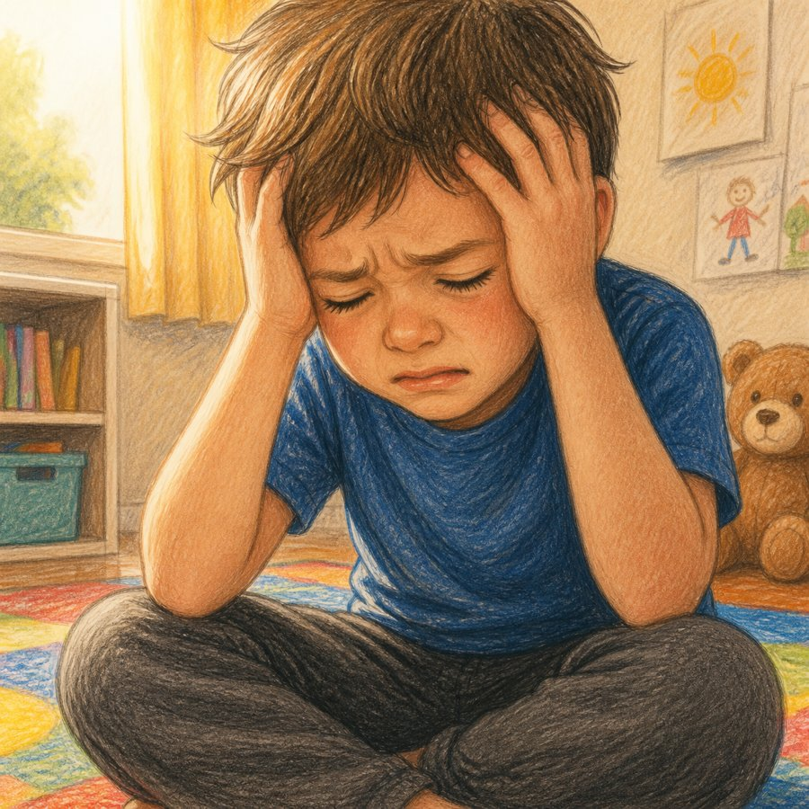
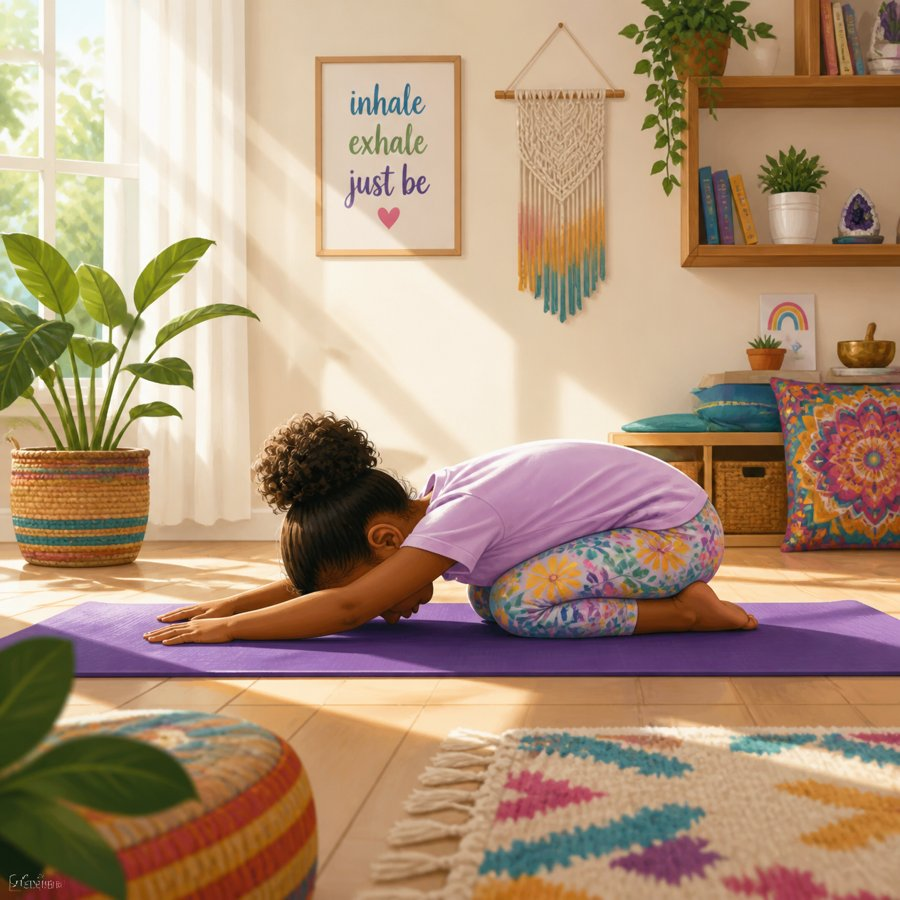
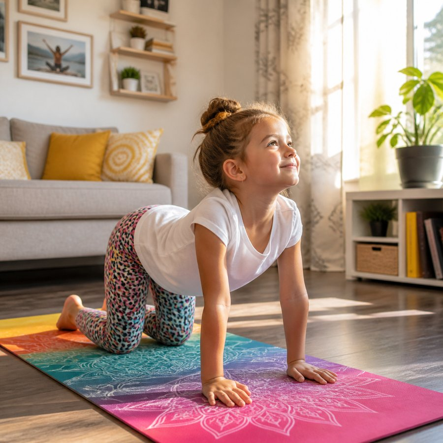
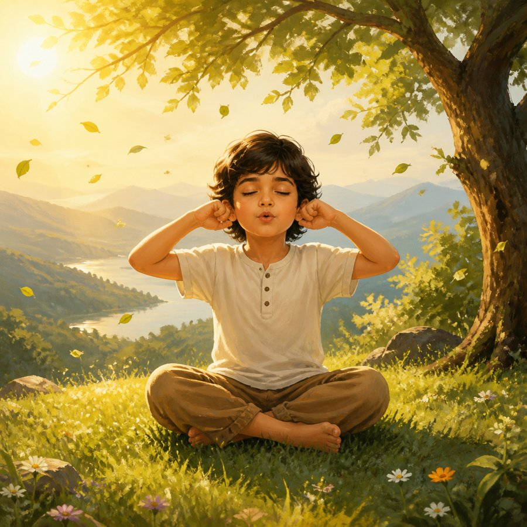
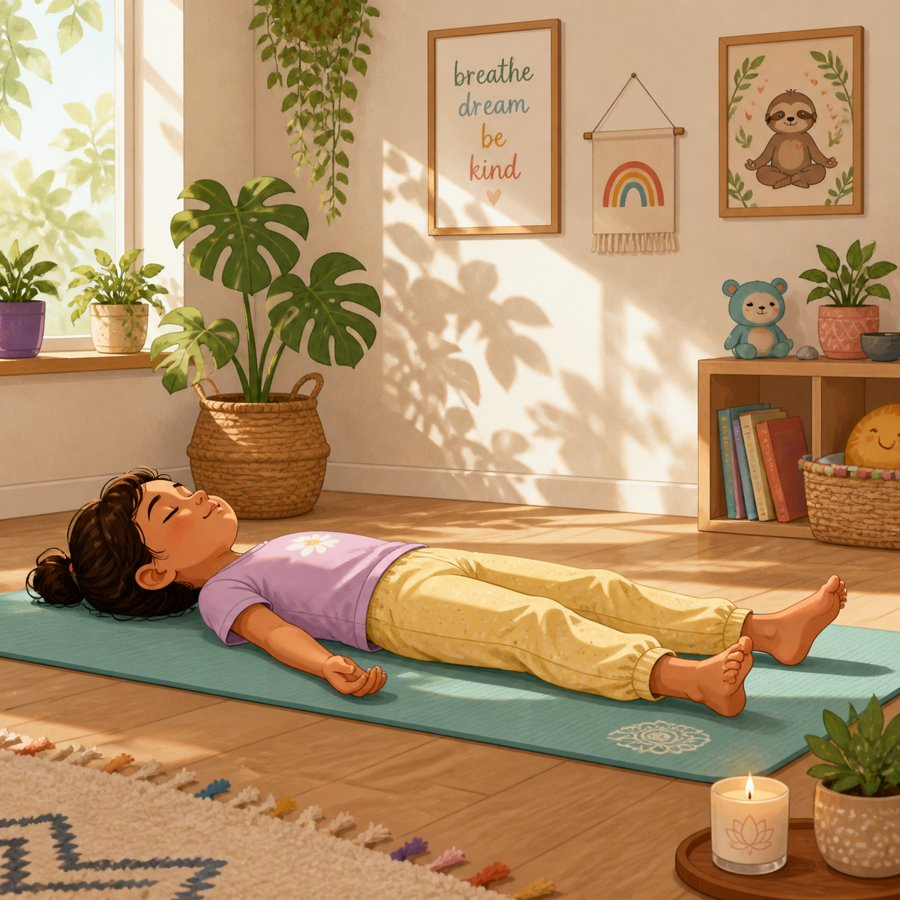

Headache in children: common types, migraine, and what may help prevent itबच्चों में सिरदर्द: आम प्रकार, माइग्रेन, और किन आदतों से बचाव में मदद मिल सकती है
Headaches are common in children, even young ones. Most are not dangerous, but some need a doctor's check. This page explains the common types, when to see a doctor, and simple daily habits that may help.बच्चों को सिरदर्द अक्सर होता है, छोटे बच्चों को भी। ज़्यादातर सिरदर्द खतरनाक नहीं होते, पर कुछ में डॉक्टर को दिखाना ज़रूरी होता है। इस पेज पर सिरदर्द के आम प्रकार, डॉक्टर को कब दिखाएँ, और रोज़ की आसान आदतें बताई गई हैं जो मदद कर सकती हैं।

See a doctor at onceतुरंत डॉक्टर को दिखाएँ
Do not wait and do not treat at home if your child has any of these:अगर बच्चे में इनमें से कोई भी लक्षण हो, तो इंतज़ार न करें और घर पर इलाज न करें:
- A sudden, very severe headache, or the worst headache your child has ever hadअचानक बहुत तेज़ सिरदर्द, या बच्चे को अब तक का सबसे तेज़ सिरदर्द
- A fit (seizure) or shaking of the bodyदौरा (फिट) पड़ना या शरीर का झटके खाना
- Drowsy, confused, very hard to wake, or behaving strangelyबहुत नींद में रहना, उलझन में होना, जगाना बहुत मुश्किल हो, या अजीब बर्ताव करना
- Weakness, numbness, drooping face, trouble speaking, or trouble walkingकमज़ोरी, सुन्न पड़ना, चेहरा एक तरफ़ लटकना, बोलने या चलने में दिक्कत
- Double vision, blurred vision, or loss of visionदो-दो चीज़ें दिखना, धुंधला दिखना, या नज़र जाना
- Repeated vomiting, especially on waking upबार-बार उल्टी, खासकर सुबह उठते ही
- Stiff neck with fever, or a rash with feverबुखार के साथ गर्दन अकड़ना, या बुखार के साथ दाने
- Headache after any head injuryसिर पर चोट के बाद सिरदर्द
- Headache that wakes the child from sleepसिरदर्द से बच्चे की नींद खुल जाना
- Any headache in a baby or very young child that is not settlingछोटे बच्चे या शिशु में कोई भी सिरदर्द जो ठीक न हो रहा हो
1Common types of headache in childrenबच्चों में सिरदर्द के आम प्रकार
Tension-type headacheतनाव वाला सिरदर्द (Tension-type)
- A dull, tight, band-like ache on both sides of the head or at the back of the neck.सिर के दोनों तरफ़ या गर्दन के पीछे भारी, कसा हुआ, पट्टी बँधी जैसा दर्द।
- Common after long study hours, stress, hunger, or poor sleep.लंबी पढ़ाई, तनाव, भूख, या कम नींद के बाद आम।
- The child can usually keep doing daily activities, though they may feel uncomfortable.बच्चा आम तौर पर अपने रोज़ के काम कर सकता है, हालाँकि उसे असहजता हो सकती है।
Migraineमाइग्रेन
See section 2 below.नीचे सेक्शन 2 देखें।
Headache with cold, sinus, or feverसर्दी, साइनस या बुखार के साथ सिरदर्द
A blocked nose, cough, sore throat, or fever along with the headache.सिरदर्द के साथ नाक बंद, खांसी, गले में खराश, या बुखार।
Eye-strain headacheआँखों पर ज़ोर से सिरदर्द
Comes after long screen time, reading, or writing, often with tired or watery eyes.लंबे समय तक मोबाइल या टीवी, पढ़ाई या लिखाई के बाद, अक्सर आँखें थकी या पानी भरी लगती हैं।
2Migraine: a type of headacheमाइग्रेन: सिरदर्द का एक प्रकार
- Throbbing or pulsing pain, often on one side, or in the forehead or temples. In children it can be on both sides too.धड़कने वाला दर्द, अक्सर एक तरफ़, या माथे या कनपटी पर। बच्चों में दोनों तरफ़ भी हो सकता है।
- Often comes with feeling sick (nausea), vomiting, paleness, tiredness, or dislike of bright light and loud noise.अक्सर जी मिचलाना, उल्टी, चेहरा पीला पड़ना, थकान, या तेज़ रोशनी और ज़ोर की आवाज़ से चिढ़।
- The child often wants to lie down in a dark, quiet room.बच्चा अक्सर अंधेरे, शांत कमरे में लेटना चाहता है।
- It can last from a few hours up to two days.यह कुछ घंटों से लेकर दो दिन तक रह सकता है।
- Migraine often runs in families. If a parent or close relative has migraine, tell the doctor.माइग्रेन अक्सर परिवार में चलता है। अगर माता-पिता या किसी करीबी रिश्तेदार को माइग्रेन है, तो डॉक्टर को बताएँ।
3See a doctor soonजल्दी डॉक्टर को दिखाएँ
Book a visit within a few days if:अगर ये हों, तो कुछ दिनों के अंदर अपॉइंटमेंट लें:
- Headaches come more than 2 times a week.सिरदर्द हफ़्ते में 2 बार से ज़्यादा होता है।
- Headaches are getting worse over weeks, or are a new pattern.कुछ हफ़्तों में सिरदर्द बढ़ रहा है, या नए ढंग का है।
- Headaches keep your child away from school or play.सिरदर्द की वजह से बच्चा स्कूल या खेल से दूर रहता है।
- Pain medicine is needed more than 2 days in a week.हफ़्ते में 2 दिन से ज़्यादा दर्द की दवा लेनी पड़ती है।
- Headaches come with weight loss, poor growth, or poor appetite.सिरदर्द के साथ वज़न घटना, विकास में कमी, या भूख कम लगना।
4Relief at home during a headacheसिरदर्द में घर पर राहत
- Let your child rest in a dark, quiet room.बच्चे को अंधेरे, शांत कमरे में आराम करने दें।
- Offer small sips of water. Dehydration can make headaches worse.थोड़ा-थोड़ा पानी पिलाएँ। पानी की कमी से सिरदर्द बढ़ सकता है।
- Offer a light snack if the child has skipped a meal.अगर बच्चे ने खाना छोड़ा है, तो हल्का नाश्ता दें।
- A cool or lukewarm cloth on the forehead may give comfort.माथे पर ठंडा या हल्का गुनगुना कपड़ा रखने से आराम मिल सकता है।
Medicine:दवा: give only the dose advised by your doctor, or written on the label for your child's weight and age. Do not give adult tablets. Do not give aspirin to children. Do not give two medicines with the same ingredient.केवल डॉक्टर की बताई खुराक दें, या दवा के लेबल पर बच्चे की उम्र और वज़न के हिसाब से लिखी खुराक। बड़ों की गोली न दें। बच्चों को एस्पिरिन न दें। एक ही साल्ट वाली दो दवाएँ एक साथ न दें।
Be careful:सावधानी: frequent pain medicine can itself cause daily headaches. If your child needs it more than 2 days a week, see the doctor.बार-बार दर्द की दवा खुद रोज़ का सिरदर्द बढ़ा सकती है। अगर हफ़्ते में 2 दिन से ज़्यादा दवा की ज़रूरत पड़े, तो डॉक्टर को दिखाएँ।
5Prevention: simple daily habits that may helpबचाव: रोज़ की आसान आदतें जो मदद कर सकती हैं
Headaches have many causes, so no single step works for every child. These habits support overall health and may reduce how often headaches come.सिरदर्द के कई कारण होते हैं, इसलिए कोई एक उपाय हर बच्चे के लिए काम नहीं करता। ये आदतें सेहत को बेहतर रखती हैं और सिरदर्द कम होने में मदद कर सकती हैं।
Sleep at fixed timesतय समय पर सोना
Keep sleep and wake-up times the same every day, including weekends (within about 1 hour). Sleep matters more than most parents expect.सोने और उठने का समय रोज़ एक जैसा रखें, छुट्टी वाले दिन भी (लगभग 1 घंटे के अंदर)। नींद जितनी ज़रूरी है, उतनी ज़्यादातर माता-पिता नहीं समझते।
| Ageउम्र | Sleep needed in 24 hours24 घंटे में ज़रूरी नींद |
|---|---|
| 3–5 years3–5 साल | 10–13 hours (including afternoon nap)10–13 घंटे (दोपहर की झपकी सहित) |
| 6–12 years6–12 साल | 9–12 hours9–12 घंटे |
| 13–18 years13–18 साल | 8–10 hours8–10 घंटे |
Eat regular mealsसमय पर खाना खाएँ
- Do not skip breakfast. Long gaps between meals can trigger headaches.नाश्ता न छोड़ें। खाने के बीच लंबा अंतर सिरदर्द ला सकता है।
- Pack a healthy snack for school.स्कूल के लिए सेहतमंद नाश्ता साथ दें।
Drink water through the dayदिन भर पानी पिएँ
- Keep a water bottle at school and at home.स्कूल और घर में पानी की बोतल रखें।
- Avoid relying on cola, energy drinks, or other sugary or caffeinated drinks.कोल्ड ड्रिंक, एनर्जी ड्रिंक या दूसरे मीठे या कैफ़ीन वाले पेय पर निर्भर न रहें।
Limit screensमोबाइल-टीवी का समय सीमित करें
- Stop screens at least 1 hour before sleep.सोने से कम से कम 1 घंटा पहले स्क्रीन बंद करें।
- During long screen use, take a short break every 20 minutes. Look at something far away for a few seconds.लंबे समय तक स्क्रीन देखते समय हर 20 मिनट पर छोटा ब्रेक लें। कुछ सेकंड दूर की चीज़ देखें।
- Keep the screen at arm's length and at eye level.स्क्रीन हाथ की दूरी पर और आँखों की सीध में रखें।
Daily physical activityरोज़ शारीरिक गतिविधि
Children need about 60 minutes of active play every day, such as running, cycling, swimming, or dancing.बच्चों को रोज़ लगभग 60 मिनट दौड़ने, साइकिल, तैराकी या डांस जैसे सक्रिय खेल की ज़रूरत होती है।
Check the school bag and postureस्कूल बैग और बैठने का तरीका
A heavy bag can cause neck and shoulder pain. Use both straps, and keep the bag light.भारी बैग से गर्दन और कंधे में दर्द हो सकता है। दोनों स्ट्रैप लगाएँ और बैग हल्का रखें।
Reduce stressतनाव कम करें
- Keep a calm bedtime routine.सोने से पहले शांत दिनचर्या रखें।
- Talk with your child about school pressure, friends, or worries. Listen without blaming.स्कूल के दबाव, दोस्तों या चिंताओं पर बच्चे से बात करें। बिना दोष दिए सुनें।
Food triggersखाने की चीज़ें जो सिरदर्द ला सकती हैं
Some children notice headaches after certain foods. Only remove a food if your child clearly links it to headaches, and check with the doctor first. Avoid cutting many foods, because children need balanced nutrition to grow.कुछ बच्चों को कुछ खाने के बाद सिरदर्द होता है। कोई चीज़ तभी छोड़ें जब बच्चे में साफ़ तौर पर सिरदर्द से जुड़ी दिखे, और पहले डॉक्टर से पूछें। बहुत सारी चीज़ें एक साथ न छोड़ें, क्योंकि बढ़ने के लिए बच्चों को संतुलित पोषण चाहिए।
6Gentle yoga and pranayam for childrenबच्चों के लिए हल्का योग और प्राणायाम
These practices can help a child relax. They support general wellbeing, but they do not replace medical care.इन अभ्यासों से बच्चे को आराम मिल सकता है। ये सामान्य सेहत में सहायक हैं, पर डॉक्टरी इलाज की जगह नहीं लेते।
- Practise for about 10 minutes a day, ideally before bed.रोज़ लगभग 10 मिनट करें, आदर्श रूप से सोने से पहले।
- Make it playful. Never force your child.इसे खेल की तरह करें। बच्चे पर ज़ोर न डालें।
- Practise with an adult, and stop if your child feels dizzy or unwell.किसी बड़े की निगरानी में करें, और चक्कर या बेचैनी हो तो रोक दें।

Child's poseबालासन (Child's pose)Kneel, sit back on the heels, and rest the body forward with the arms relaxed. Hold for about 1 minute.घुटनों के बल बैठें, एड़ियों पर बैठें, और शरीर आगे झुकाकर बाँहें ढीली छोड़ें। लगभग 1 मिनट रुकें।

Cat and cowमार्जरी-आसन (बिल्ली-गाय)On hands and knees, slowly arch the back like a cat, then drop the belly and look up like a cow. Repeat 5 times.हाथों और घुटनों के बल, धीरे से बिल्ली की तरह पीठ ऊपर उठाएँ, फिर गाय की तरह पेट नीचे करके ऊपर देखें। 5 बार दोहराएँ।

Bhramari (humming bee breath)भ्रामरी प्राणायाम (गुनगुनाती मधुमक्खी साँस)Sit comfortably, close the eyes, breathe in, then breathe out slowly while humming softly. Repeat 5 times. Do not hold the breath.आराम से बैठें, आँखें बंद करें, साँस लें, फिर धीरे-धीरे हल्की गुनगुनाहट के साथ साँस छोड़ें। 5 बार दोहराएँ। साँस रोकें नहीं।

Shavasana (lying rest)शवासन (लेटकर आराम)Lie flat on the back for about 5 minutes, with soft music or a calm story.पीठ के बल सीधे लेटें, लगभग 5 मिनट, हल्के संगीत या शांत कहानी के साथ।
7Keep a headache diaryसिरदर्द की डायरी रखें
A diary helps the doctor find the pattern. Note:डायरी से डॉक्टर को पैटर्न समझने में मदद मिलती है। लिखें:
- Date and time the headache started, and how long it lastedसिरदर्द कब शुरू हुआ (तारीख और समय) और कितनी देर रहा
- Where the pain was, and how strong it felt (mild, moderate, or severe)दर्द कहाँ था, और कितना तेज़ लगा (हल्का, मध्यम, या तेज़)
- Vomiting, light or noise sensitivity, or other symptomsउल्टी, रोशनी या आवाज़ से चिढ़, या दूसरे लक्षण
- Sleep the night before, meals, water, screen time, and activitiesपिछली रात की नींद, खाना, पानी, स्क्रीन का समय, और गतिविधियाँ
- Any medicine given, and whenकौन-सी दवा दी गई और कब
- Stress events at school or homeस्कूल या घर में कोई तनाव वाली घटना
Bring the diary to every visit.हर विज़िट पर डायरी साथ लाएँ।
Please read.कृपया ध्यान दें। This information is for general education. Most children who have headaches have a harmless cause. Every child is different, and your child may need a different approach. If you are worried, or if any warning sign above appears, seek medical care without delay. This material is not a substitute for a consultation with a doctor.यह जानकारी केवल सामान्य शिक्षा के लिए है। सिरदर्द वाले ज़्यादातर बच्चों में कारण हानिरहित होता है। हर बच्चा अलग होता है, और आपके बच्चे को अलग उपाय की ज़रूरत हो सकती है। अगर आप चिंतित हैं, या ऊपर दिया कोई भी खतरे का लक्षण दिखे, तो बिना देर किए चिकित्सा सहायता लें। यह सामग्री डॉक्टर से परामर्श का विकल्प नहीं है।
Call the clinic: +91 81305 21456क्लिनिक को कॉल करें: +91 81305 21456